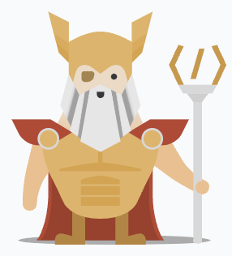

Return to recipe index
Full Stack Developer

Description
A tongue and cheek recipe because many of my favorite recipes I
can't easily find electronic versions of, and I'm not going to
use this site for actual cooking anyway.
Ingredients
- 1 developer frustrated by job positions requiring full stack experience
- 1 online web development course
- time (variable amount, lots)
- perseverance (variable amount, lots)
Steps
- Go through a path at The Odin Project
- If you need help, ask on Discord
- Get a job
- Profit! 😀